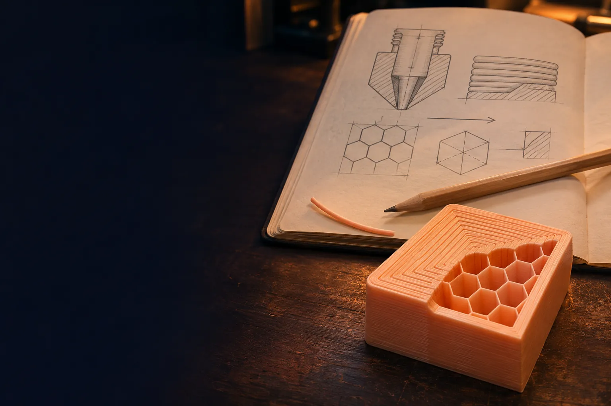

Todas las fichas del curso en un buscador, en español y en inglés.
Módulo 10
Todas las fichas del curso, los títulos de las lecciones y los ajustes del laminador en un solo lugar. Buscá en español o en inglés: "retracción" y "retraction" llevan al mismo sitio.